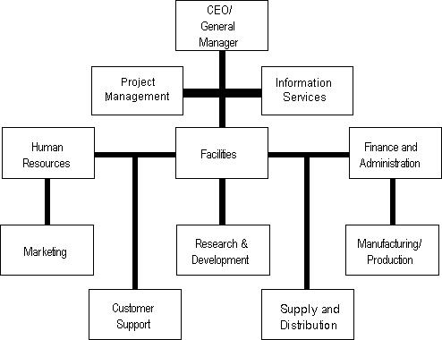

Parkinson's Law
Parkinson's Law, that "work expands so as to fill the time available for its completion," and which was intended as a whimsical mockery of the uncontrolled growth of corporate bureaucracy, was in fact the announcement of the Information Age, heralding the triumph of information technology and establishing a new meritocracy: the authority of knowledge. The expansion of work that filled the time available for its completion confirmed the importance of information and digital technologies necessary to automate both office and factory floor, resulting in a revolution in robotics. These new techniques of retrieval and organization of information encompassed:
Intellectual Property
Musical, literary, and artistic works; patents, trade secrets, inventions, in-house technologies, logos, symbols, names, images, and designs used in commerce, including copyrights, trademarks, and related rights.
Administration Operations
Company organization; factory floor organization; manufacturing processes and technologies; R&D; training programs, procedures and materials; company manuals; libraries; archival and database operations; legal strategies; customer information; accounting procedures; personnel records and hiring procedures; etc.
At the
turn of the century
A typical organization chart
